Tashkent
Tashkent is the capital and largest city of Uzbekistan, as well as the most populous city in Central Asia, with a population of 2.9 million.It is in northeastern Uzbekistan, near the border with Kazakhstan. Tashkent comes from the Turkic tash and kent, literally translated as "Stone City" or "City of Stones". Today, as the capital of an independent Uzbekistan, Tashkent retains a multiethnic population, with ethnic Uzbeks as the majority.
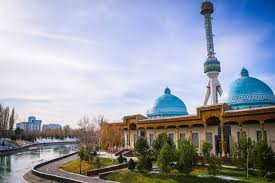
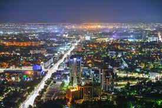
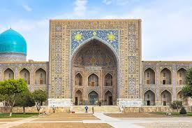
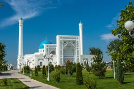
Osh
Osh is the second-largest city in Kyrgyzstan, located in the Fergana Valley in the south of the country and often referred to as the "capital of the south". It is the oldest city in the country (estimated to be more than 3,000 years old) and has served as the administrative center of Osh Region since 1939. The city has an ethnically mixed population of 322,164 in 2021,comprising Uzbeks, Kyrgyz, Russians, Tajiks, and other smaller ethnic groups. It is about 5 km from the Uzbekistan border.
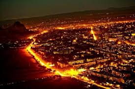
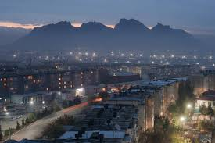
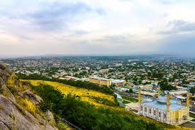
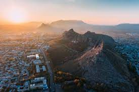
Samarkand
Samarqand is a city in southeastern Uzbekistan and among the oldest continuously inhabited cities in Central Asia. There is evidence of human activity in the area of the city from the late Paleolithic Era, though there is no direct evidence of when Samarkand was founded; several theories propose that it was founded between the 8th and 7th centuries BCE.
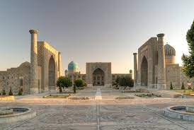
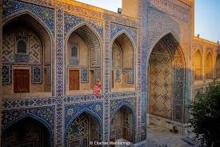
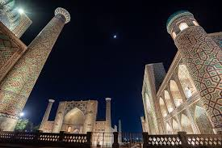
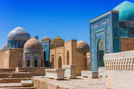
Karshi
Karshi is a city in southern Uzbekistan. It is the capital of Kashkadarya Region. Administratively, Karshi is a district-level city, that includes the urban-type settlement Kashqadarya.It has a population of 278,300 (2021 estimate). It is located at latitude 38° 51' 48N; longitude 65° 47' 52E at an altitude of 374 meters. The city is important in natural gas production, but karshi is also famous for its production of woven flat carpets.
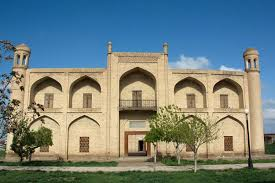
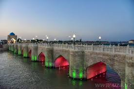
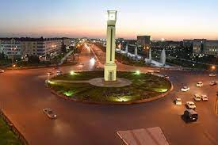
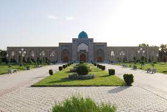